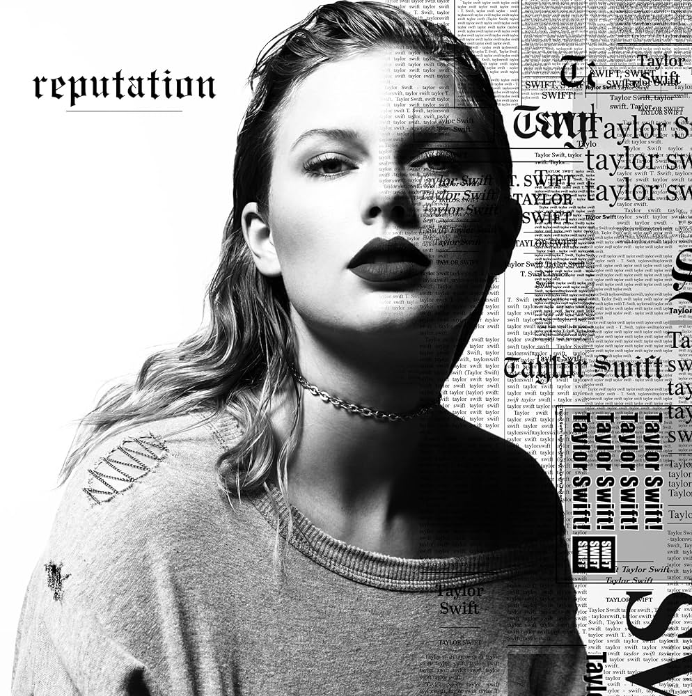

Reputation (2017)
- Don't Blame Me:

Informações Gerais
- Artista: Taylor Swift
- Data de Lançamento: 10 de novembro de 2017
- Gênero: Pop, Electropop, Dark Pop
- Gravadora: Big Machine Records
- Produtor: Jack Antonoff, Taylor Swift, e vários outros produtores
Faixas Notáveis
- "…Ready for It?" - Um dos maiores sucessos do álbum, que brinca com a imagem de Swift como uma figura romântica e com as expectativas em torno de seus relacionamentos.
- "Look What You Made Me Do" - O primeiro single do álbum, conhecido por seu som dark e por suas letras que abordam o conceito de vingança e renovação. O videoclipe destaca a transformação visual de Swift.
- "Delicate" – Uma balada pop com uma produção mais suave e uma letra que explora a fragilidade de um novo relacionamento e a vulnerabilidade.
- "Getaway Car" – Uma faixa animada que conta a história de uma fuga e de um romance turbulento.
- "This Is Why We Can’t Have Nice Things" – Uma canção com uma produção festiva que aborda temas de traição e a frustração com pessoas que não valorizam a amizade.
Legado
- "Reputation" é frequentemente visto como uma reinvenção de Taylor Swift, marcando uma resposta direta às controvérsias e críticas que a artista enfrentou nos anos anteriores. O álbum consolidou a capacidade de Swift de se reinventar e explorar novos territórios musicais, ao mesmo tempo que lidou com a pressão da fama e os desafios pessoais. A fase "Reputation" ajudou a preparar o terreno para os álbuns subsequentes de Swift, mostrando sua habilidade de evoluir e se adaptar como artista.